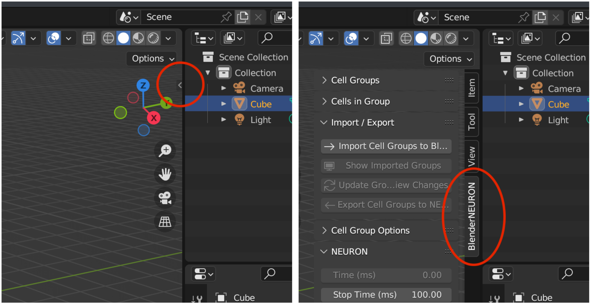
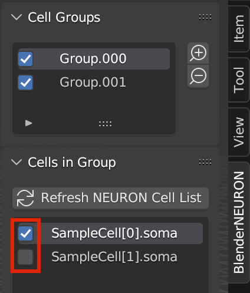
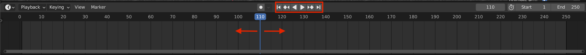
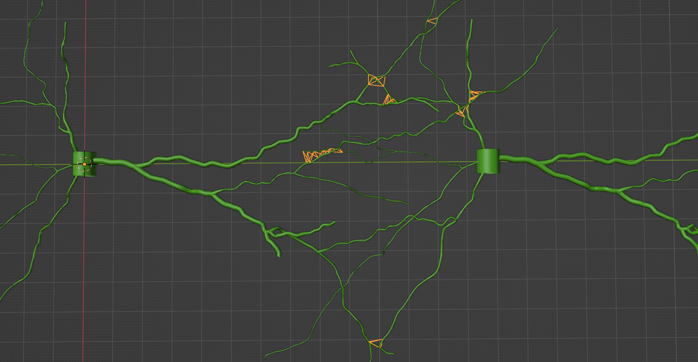

Getting Started
Below are text guides for BlenderNEURON
Video tutorials are available on the Tutorials Page.
Have you installed BlenderNEURON? See Installation for help on installing BlenderNEURON in Blender and NEURON.
Importing Cells
Load your model in NEURON and start BlenderNEURON
sample of code to run in terminal:
python from neuron import h, gui h.load_file('path/to/SampleCell.hoc') cell1 = h.SampleCell()
You can download SampleCell.hoc to test BlenderNEURON with
In the NEURON GUI, open Graph > Shape Plot, to ensure the model is loaded correctly
Start BlenderNEURON in NEURON/Python by running:
from blenderneuron import neuronstart
Start Blender with the BlenderNEURON add-on
Navigate to the BlenderNEURON tab in the sidebar
press ‘N’ to toggle sidebar

{kind=link}
Import cells with ‘Import Cell Groups to Blender’ under ‘Import / Export’
{kind=link}
Editing and Saving Cells
With the cells imported, left click a cell in the 3d view to select it (like other Blender objects)
For help with navigating Blender: Blender Fundamentals Videos or Blender Manual
‘G’ to move
‘R’ to rotate
‘S’ to scale
To select and rotate individual sections:
Under ‘Cell Group Options’, select ‘Interact with Each:’ ‘Section’
Import cells again
To export changes to NEURON after editing cell morphology/position in Blender:
Click ‘Update Groups with View Changes’ under ‘Import / Export’
Then click ‘Export Cell Groups to NEURON’ under ‘Import / Export’
Adding Cells to Groups
Expand ‘Cell Groups’ and ‘Cells in Group’
Add groups with the ‘+’ to the right of the group names
Check off cells under ‘Cells in Group’ to add them to the currently selected group
A cell can only be in one group at a time

{kind=link}
Changing Cell Colors
Select the Cell Group you would like to change display settings for
Expand ‘Cell Group Options’
Next to ‘Init. Color’, select a color on the color wheel
{kind=link}
The cells will be in that color the next time the cell group is imported
Visualizing Cell Model Voltage
Have your model with activity loaded in NEURON
To check activity in NEURON GUI, go to ‘Graph’ > ‘Voltage Axis’ and ‘Tools > Run Control’ and select ‘Init & Run’
Select Cell Group to animate
Expand ‘Cell Group Options’
Check off ‘Record Activity’
Activity will be recorded next time the cells are imported
Choose Recording Settings
Set start and stop recording times (in ms): what time range in the NEURON simulation to record
Select ‘Sampling Period’: how many milliseconds between samples collected of the voltage
Select ‘Frames per Milliseconds’, how many frames of animation will represent each millisecond of NEURON activity
Set colors to correspond with the variable low and high values on the color scale
Set variable low and high values to encompass the activity in your model
Import cells with ‘Import Cell Groups to Blender’ under ‘Import / Export’
Scrub the timeline on the bottom to see animation
Change in voltage should be visible as change in color and/or brightness (to preview change in brightness, press ‘Z’ > ‘Material Preview’)
Frame number = NEURON simulation time (ms) X ‘Frames per Millisecond’

{kind=link}
Creating Synapses by Proximity
Make sure to have at least 2 cells instantiated in NEURON
Add cells that will form synapses to different groups
Expand ‘Form Synapses’
This section will appear when you have at least two groups
Select groups for the ‘Source’ (presynaptic) and ‘Destination’ (postsynaptic) cells
Must be different groups
Select which sections will form synapses next to ‘Sections:’
Surround characters with asterisks (*example*) to include all sections with those characters in the name
Select synaptic mechanism next to ‘Synapse’, if you have additional mechanisms loaded in NEURON
By default, NEURON lets you use ‘ExpSyn’ mechanism
For help on compiling mod files to add mechanisms: Mod Files
Press ‘Find Synapse Locations’
Synapse locations will be shown in orange

{kind=link}
Create the synapses in NEURON by pressing ‘Create Synapses’
Confining Cells between Layers
Import cells with ‘Import Cell Groups to Blender’
Import or create mesh object(s) to confine the cells between
Expand ‘Confine Between Layers’
Section will appear once at least 1 cell is imported
Select objects for the confinement ‘Start Layer’ and ‘End Layer’
Next to ‘Name Contains:’, select sections that will be confined
Surround characters with asterisks (*dend*) to confine all sections with those characters
Press ‘Confine’ to confine the sections between the layers
Save changes in Blender by pressing ‘Update Groups with Confinement Results’
Save confinement results to NEURON by pressing ‘Export Cell Groups to NEURON’ under ‘Import / Export’